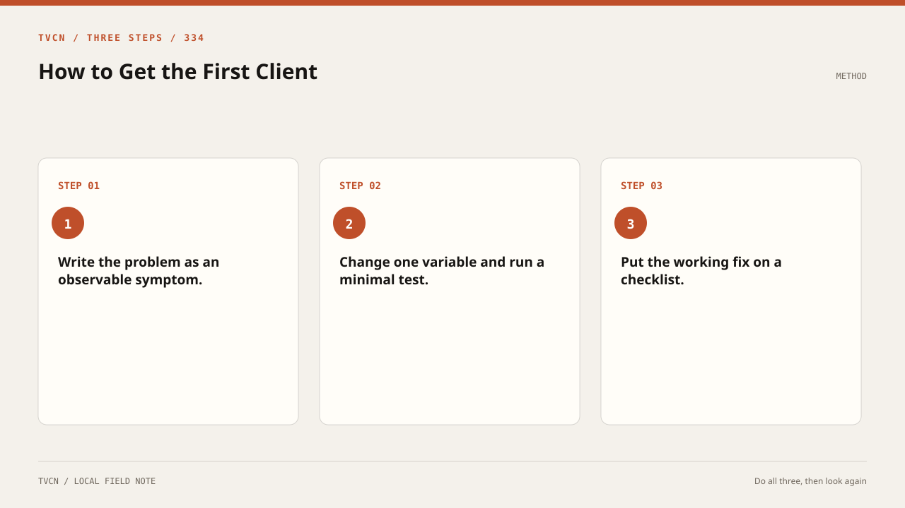

Find the first client in a problem you already solved
Do not start with “who will pay me.” Start with “whose specific problem have I solved?” List three real outcomes: time saved, rework reduced, a process that now runs. The first client usually resembles the people in those three stories.
Keep the first engagement to one deliverable; do not sell a yearly content plan.
Limits
A low price is not a ticket in. Below cost, the first client becomes the first unfinished project. Trade clear scope for trust, not free work.
The first client comes from a testable small delivery, not a contact list
Without clients, the useful move is not a DM saying “I can shoot.” It is a 30–60 second sample aimed at one specific problem for one type of buyer. The sample must be understood in ten seconds and must make them say, “that's us.”
Three sources, ranked by conversion
- Communities you already belong to: industry groups, alumni, former colleagues. Solve one small problem for one person in under an hour, free, and leave a reusable file behind.
- Local small businesses: cafés, barbers, pet shops. Bring one 30-second sample and ask what their current photos or videos lack; do not start with gear.
- Open calls: brand collaborations and platform briefs. Use them to practice quoting and delivery, not to fund your month.
Make the first scope small enough to close
Take one location, one finished piece and two revisions, under seven days. The first job is not for profit. It is for three assets: one complete process, one publishable case and one client willing to write two sentences. Mention future work in the email, not in the quote.
Ask four questions at the first meeting
- Who watches this?
- What should they do after watching?
- What do you lose without this film?
- Which is tighter, budget or launch date?
If the four answers do not exist, the project is not ready. Sell a one-page treatment or a one-day consultation first; do not promise a finished film.
Three-step flow

On set
Start with friends, community, and small shops. Send one concrete proposal, not a poster.
Do this
Your first client comes from people you know, your community, and small businesses. Send a specific plan, not a portfolio poster.
- List ten people or shops you might know; pick one with a real need.
- Give them a one-page plan: what, how long, what they get, what it costs.
- Do one small job, deliver on time, then ask for a quote or referral.
Avoid
Do not mass-message “I make videos”; a specific plan beats a self-introduction.
Image note. Covers, diagrams and step images on this page are editorial illustrations or structure diagrams, not photographs of a test performed here; they are not evidence of measured gear performance. Where an image is AI-assisted, the caption says so. Read the test conditions in the text before treating an image as proof.